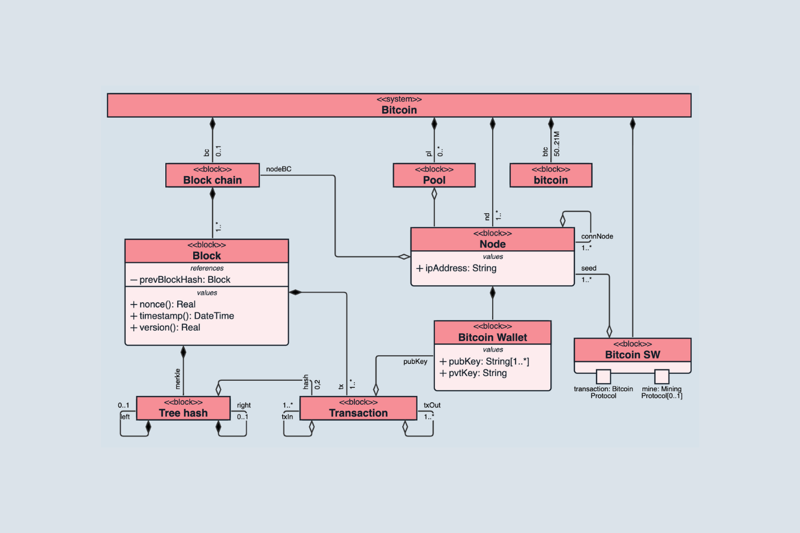

UML diagrammid tähistab Ühtne modelleerimiskeel. See on standard, mida kasutatakse peamiselt objektorienteeritud sisuliste dokumentatsioonimudelite loomiseks mis tahes reaalses maailmas eksisteeriva tarkvarasüsteemi jaoks.
Huvitavad faktid:
UML on suurepärane viis professionaalse dokumentatsiooni loomiseks, mis on iga projekti arendamise vajalik osa.
UML on süsteemide objektorienteeritud disaini loomise oluline osa. See pakub teile vahendeid võimsate mudelite ja kujunduste loomiseks ratsionaalsete süsteemide jaoks, mida saab ilma suuremate raskusteta mõista.
UML võimaldab paremat suhtlust meeskonnaliikmete vahel, annab visuaalse ülevaate keerulistest süsteemidest ning lihtsustab arendusprotsessi ja vigade leidmist. UML koosneb erinevatest diagrammidest, mis on jagatud kolme põhirühma: käitumisdiagrammid, interaktsioonidiagrammid ja struktuuridiagrammid.
UML Diagrammi näide:
